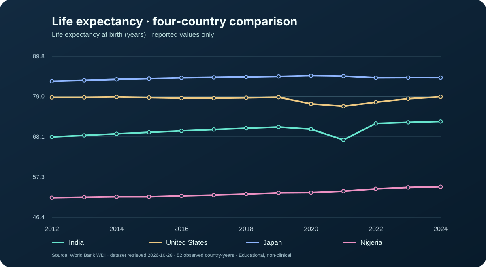
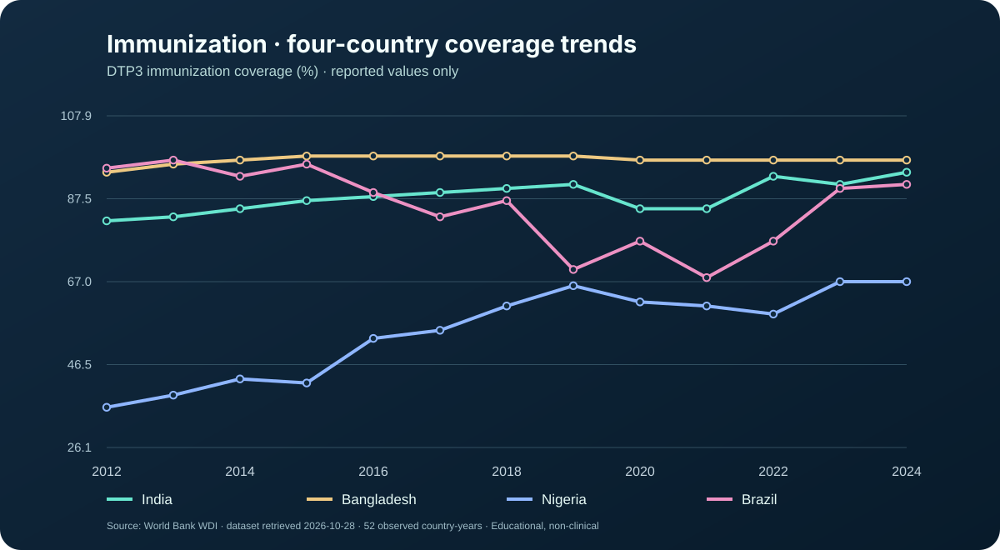
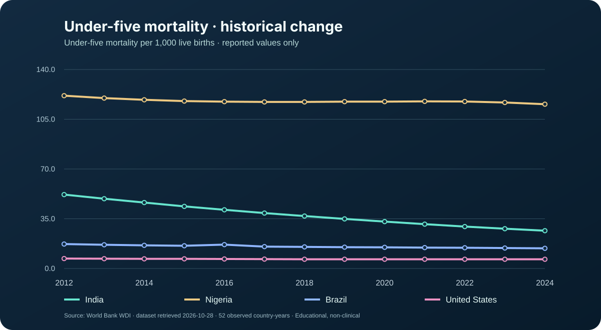
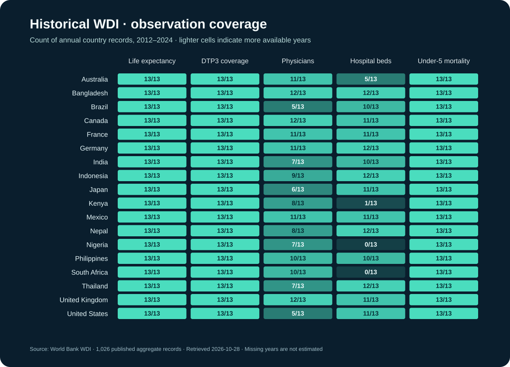

HealthPulse AI
Public Health Trends & Resource Intelligence — a full-stack, provenance-aware aggregate-health analytics prototype.
A research dashboard designed around responsible interpretation.
HealthPulse AI explores annual country-level indicators and shows how measurement definitions, reporting coverage and source provenance affect interpretation. It includes a reproducible synthetic demonstration, with a verified World Bank WDI historical snapshot and an optional WHO GHO pathway that remains live-unverified.
Different aggregates can tell different stories.
Health data sources vary in units, country coverage, publication delays and disaggregation. A visual interface must avoid mixing totals and subgroup values, or implying that low resource density necessarily proves a service shortage.
From data quality to reproducible insight.
Data ingestion & preparation
Deterministic demo generator, source-labeled WDI importer, optional bounded WHO GHO OData loader, country/year/indicator validation, explicit source fields and SQLite deduplication.
Analytics & machine learning
Yearly trends, country-level comparison, exploratory KMeans clustering, robust year-over-year anomaly flags and Ridge trend extrapolation.
Four integrated dashboard views.
Overview provides KPIs and trends; Indicators supports country-year inspection; Regional Comparison shows unweighted country means with coverage notes; Trends presents historical series, simple forecasts and anomaly flags. CSV export supports downstream Power BI workflows.
Architecture: React + Vite + Recharts → FastAPI REST endpoints → validated SQLite observations → optional GHO data sync. Docker Compose and GitHub Actions CI configuration are included in the local project package.
Verification — without exaggerated claims.
84 Python tests passed in GitHub CI, including the World Bank data adapter, API, forecasting and data validation. The React production build and single-container Docker smoke test passed. The dedicated HealthPulse source repository includes 1,026 real historical World Bank WDI country-year aggregates, with source attribution and checksum manifest. The cloud FastAPI service is not yet publicly hosted, and the application has no clinical or policy certification.
Real data, visible provenance.
These four visualizations plot published World Bank WDI historical aggregate observations (2012–2024 requested), independently from synthetic dashboard illustrations. Missing observations are not invented.




Source: World Bank World Development Indicators, 1,026 historical aggregate observations retrieved 28 October 2026. Not a clinical system or direct WHO GHO API. Read visual source methods ↗
Designed as an educational research prototype.
Forecasts are illustrative extrapolations, not epidemiological projections. Regional values are unweighted means, not official WHO regional estimates. Resource-density signals cannot establish actual service shortages. An independently reviewed methodology, live-data validation and production hardening would be required before use in planning or research reporting.